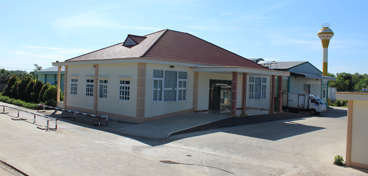
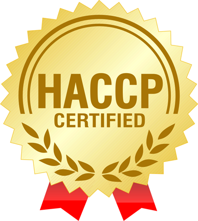
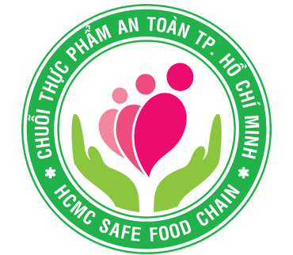

THÔNG TIN CHÚNG TÔI
LỊCH SỬ HÌNH THÀNH VÀ PHÁT TRIỂN
CÔNG TY TNHH CHĂN NUÔI LONG BÌNH
I. Giới thiệu công ty: Công ty Long Bình là một chuỗi liên kết hoạt động theo hình thức chăn nuôi khép kín từ nhập khẩu con giống, sản xuất gà con thương phẩm, sản xuất gà thịt, giết mổ tại nhà máy đạt chuẩn HACCP, sản phẩm có nguồn gốc kiểm dịch và kiểm soát giết mổ rõ ràng từ mọi công đoạn; truy xuất được nguồn gốc.

II. Lịch Sử Hình Thành:
Công ty chính thức đi vào họat động ngày 01/08/2006 với tên gọi: Công Ty TNHH Chăn Nuôi Long Bình( LongBinh
Raising Co., LTD).
Mã Số Thuế: 0304457623
Địa chỉ: 53 Đỗ Quang Đẩu, Phường Phạm Ngũ Lão, Quận 1, Hồ Chí Minh, Việt Nam,
Do Ông: Nguyễn Như Sinh làm đại diện pháp lý.
III. Ngành nghề kinh doanh:
Giết mổ gia cầm, kinh doanh sản phẩm thịt gia cầm đã qua kiểm dịch, kiểm soát giết mổ và truy xuất được nguồn
gốc rõ ràng. Đóng gói và kinh doanh trứng gia cầm thương phẩm.
IV. Sản phẩm chủ lực:
Sản phẩm gia cầm( thịt gà tươi) sạch sau giết mổ.
Sản phẩm thịt gà tươi cấp đông.
Sản phẩm thịt gà chế biến.
Trứng gia cầm( gà) tươi đã qua kiểm dịch và đóng gói.
V. CÁC BƯỚC HOÀN THIỆN VÀ MỤC TIÊU PHÁT TRIỂN:
Với lịch sử 10 năm hình thành và phát triển, Long Bình không ngừng đổi mới và hoàn thiện theo nhu cầu sử dụng
thực phẩm tuơi ngon và sạch của thị trường.
- Giai đọan những năm 2010, Long Bình đi tiên phong trong các chương trình chăn nuôi gà theo chuẩn VIETGAP.
- Giai đọan những năm 2013, Long Bình tiếp tục xây dựng nhà máy giết mổ đạt chuẩn HACCP. 
- Giai đọan năm 2015, Long Bình tự hào là đơn vị sản xuất thịt gà sạch theo " Chuỗi Thực Phẩm An Tòan” của TP. Hồ Chí Minh. 
Ở giai đọan hiện tại, mỗi ngày Long Bình cho ra thị trường khoảng 10.000 con gà và sản lượng này sẽ tăng lên gấp đôi vào
cuối năm 2016.
Là đơn vị cung cấp thịt gà, trứng gà tươi phục vụ nhu cầu cuộc sống hàng ngày của người dân, nên Long Bình thấu
hiểu nổi lo của người tiêu dùng về các vấn đề vệ sinh an tòan thực phẩm, dư lượng chất kháng sinh, chất bảo quản…
ai cũng muốn sử dụng sản phẩm tươi ngon,giàu đạm và tốt cho sức khỏe.
Nắm bắt được nguyện vọng đó của người dân nên Long Bình cam kết không ngừng đổi mới họat động nhằm đáp ứng cho
thịt trường các sản phẩm chất lượng mà giá cả lại phải chăng, phù hợp túi tiền của mọi người tiêu dùng và chung
tay vì sức khỏe cộng đồng.
Không dừng lại ở qui mô nhỏ lẻ, Long Bình tiếp tục hợp tác với các tập đoàn bán lẻ trong nước và quốc tế tại
Việt Nam để đưa các sản phẩm của chúng tôi tiếp cận với nhiều khách hàng hơn nữa. Và thành công trong việc hợp
tác với các tập đoàn lớn là minh chứng cho chất lượng cũng như giá trị sản phẩm thịt gà tươi của công ty TNHH
Chăn Nuôi Long Bình.
Trên con đường hội nhập và vươn xa hơn nửa, năm 2016 Long Bình tiếp tục nâng cao chất lượng cũng như số lượng
sản phẩm để phục vụ cho chiến lược xuất khẩu sản phẩm của công ty ra thị trường châu lục, đặc biệt là các thị
trường có chất lượng cao như Nhật Bản, HànQuốc, Singapore…
VI. Sơ Đồ Tổ Chức Của Công Ty:
CHỨNG NHẬN CỦA CÔNG TY TNHH CHĂN NUÔI LONG BÌNH
.jpg)
.jpg)
.jpg)